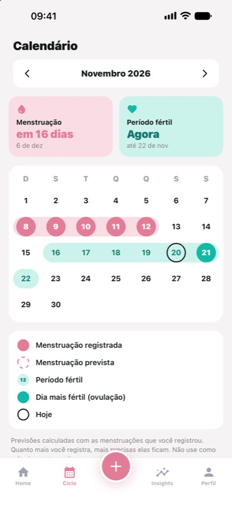
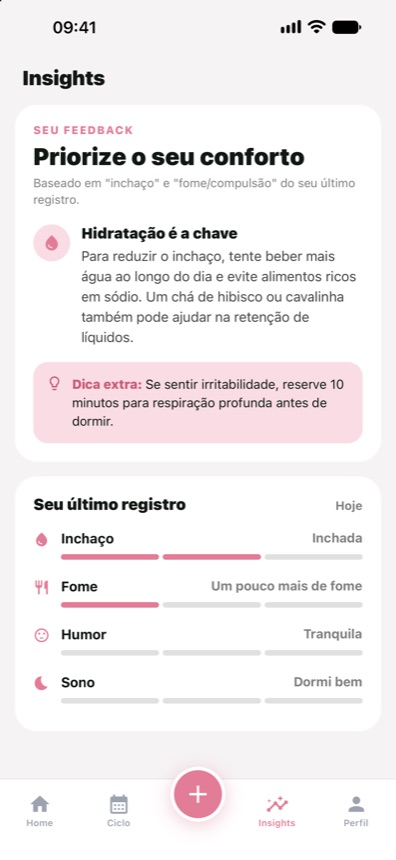

Seu ciclo, seu ritmo e dicas para cada dia
O CicloLeve prevê a menstruação e o período fértil, e ajusta as dicas do dia à fase do ciclo e ao que você sente: inchaço, fome, humor e sono.
O que dá para fazer com o CicloLeve
Tudo começa com uma pergunta simples: como você está hoje? As previsões e as dicas partem daí.

Acompanhe o ciclo e o período fértil
Calendário com a menstruação registrada, a próxima prevista e os dias férteis. A previsão melhora a cada ciclo que você registra.
Registre como você está em 1 minuto
Inchaço, fome, humor e sono, cada um numa barra de deslizar. Sem formulário longo.
Receba o que fazer e o que evitar hoje
A tela inicial mostra a fase do ciclo e ajusta as sugestões de alimentação, movimento e descanso ao que você registrou.
Entenda os seus padrões
Insights com a dica do dia, o resumo dos registros e um relatório em PDF para levar à consulta.
Por que o CicloLeve?
Feito para o dia a dia de quem quer entender o próprio corpo sem complicação.
Previsões que se ajustam a você
Cada menstruação registrada deixa a próxima previsão mais certeira, inclusive em ciclos irregulares.
Seus dados são seus
Nada é vendido nem usado para publicidade. Dá para bloquear o app com Face ID e excluir tudo quando quiser.
Como cuidamos dos seus dadosDicas para o que você sente hoje
A fase do ciclo é só uma tendência. Se hoje você está inchada ou dormiu mal, as dicas mudam.
Um compromisso com você mesma
No fim do cadastro, você escolhe o que quer cuidar (inchaço, TPM, sono, fertilidade) e firma esse compromisso segurando o símbolo do CicloLeve. A partir daí, o app lembra você de registrar e acompanha a sua evolução.
Quero participar dos testes
Planos
O acompanhamento do ciclo e a dica do dia são gratuitos. O Premium libera o restante.
Gratuito
- Previsão da menstruação e fase atual
- Registro diário de sintomas
- Dica do dia
- Artigos selecionados
Premium anual
- Faça e evite ajustados ao seu registro
- Período fértil, relações e testes
- Histórico completo e estatísticas
- Relatório em PDF para a consulta
- Todos os artigos
Premium mensal
- Tudo do Premium anual
- Sem fidelidade: cancele quando quiser
Para ler no app
Artigos curtos sobre cada fase do ciclo, em linguagem do dia a dia.
As fases do ciclo menstrual
Leitura de 4 minInchaço antes da menstruação
Leitura de 3 minSono e ciclo menstrual
Leitura de 3 minDúvidas frequentes
O CicloLeve serve como método para evitar gravidez?
Não. As previsões são estimativas baseadas nos seus registros e não substituem métodos contraceptivos nem a orientação de um profissional de saúde.
Meus dados ficam protegidos?
Seus registros ficam na sua conta, protegidos por senha, e não são vendidos nem usados para publicidade. Você pode excluir a conta e todos os dados pelo próprio app. Os detalhes estão na Política de Privacidade.
Funciona com o Apple Watch?
No iPhone, você pode conectar o CicloLeve ao app Saúde. As menstruações registradas no Apple Watch entram no CicloLeve, e os seus registros vão para o app Saúde.
Meu ciclo é irregular. O app funciona?
Funciona. Você informa isso no começo, e as previsões se ajustam conforme você registra as menstruações.
Como cancelo o Premium?
Pela loja onde você assinou (App Store ou Google Play), a qualquer momento. No plano anual, quem cancela durante os 7 dias grátis não é cobrada.